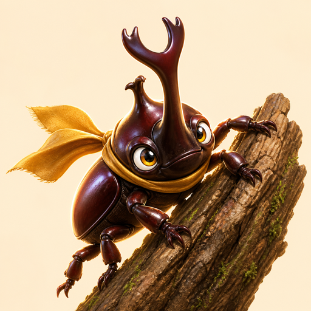

Ascent commission
First Bark Grip
Collect blue-tag sap → gold-tag sap → red-tag sap, rescue 2 firefly charms, keep grip above 35%, avoid leaf gusts, and ring the bell before haze 80%.
Drag stage: climb + orbit • Current branch ring follows the golden arc

Press Start. The suzumushi guide will call lane, sap order, grip, wind, hazard, focus, and expected score cues without covering the stage.